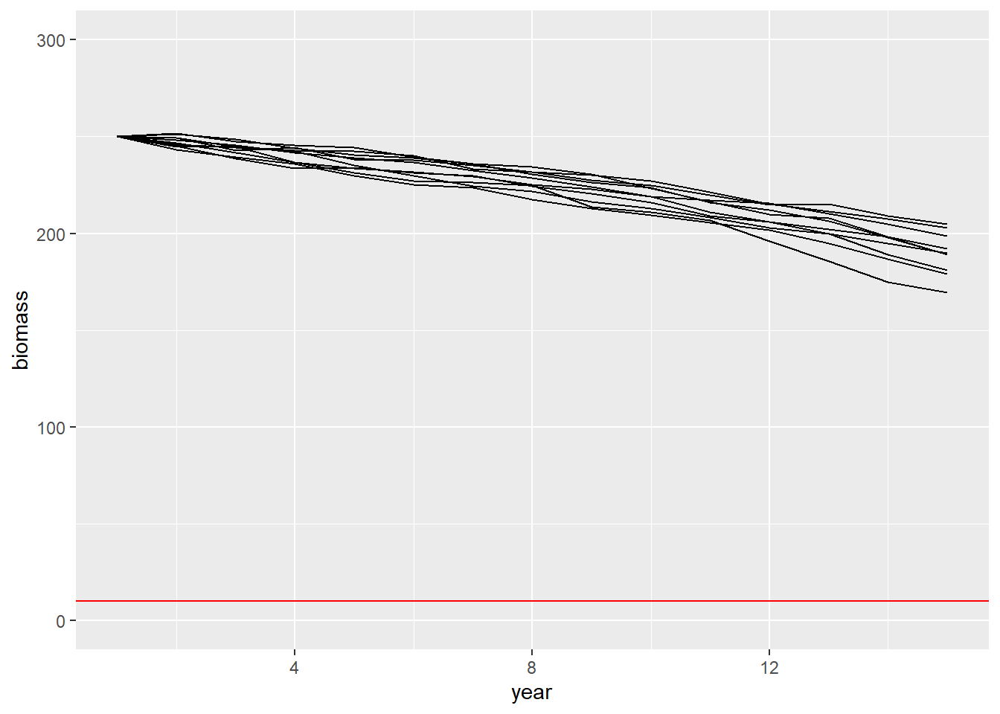
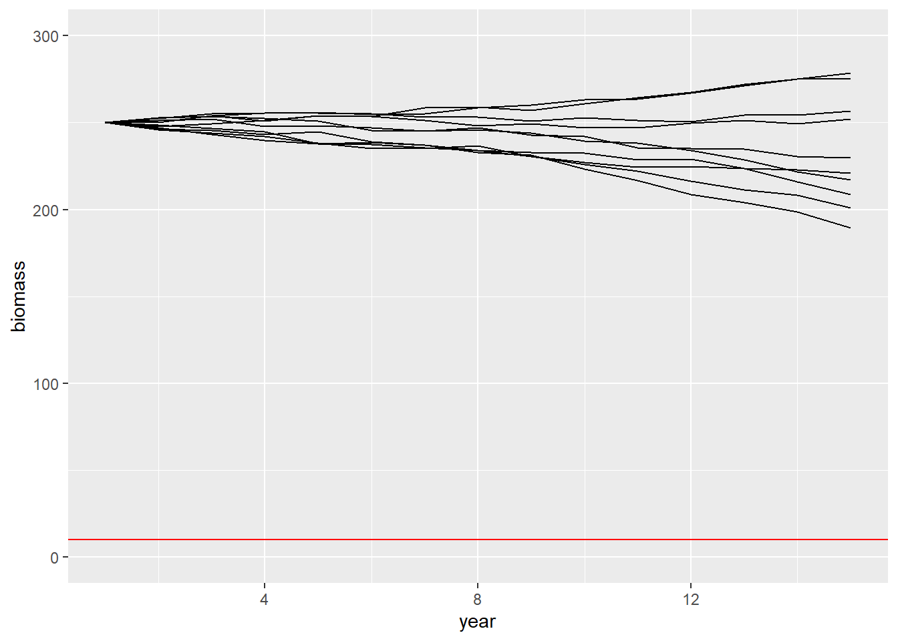

library(dplyr)
library(ggplot2)Ex 14 Population Viability Analysis of the Baltic Cod
MVEN10 Risk Assessment in Environment and Public Health
Exercise overview
Background
Jonzén at al. (2002) performed a risk analysis on the risk of collapse of Baltic Codfish, based on data from trawl surveys and commercial catch from 1980 to 1999. In order to predict the Codfish population within a range of 5, 10 and 30 years from 1999, they used a model that describe the change in biomass from one year to another as a function of initial biomass \(B_t\), intrinsic growth rate \(\rho\), density dependence \(\delta\), and commercial catch \(C_t\).
Furthermore, hazardous events occurs in all ecological systems – giving us so called “process errors”. These were accounted for by adding some “noise” to the biomass growth function so that
\[B_t = \left(B_{t-1} \cdot e^{(\pi-\delta\cdot B_{t-1})}\, - \, C_{t-1}\right) \cdot e^{N(0,\sigma)}\]
where the term \(N(0, \sigma)\) is a set of normally distributed values around a mean of 0 with standard deviation of \(\sigma\). This term represents any form of unexpected event that could either increase or decrease the growth rate of biomass a given year, i.e. it includes some variability to the growth function.
Jonzén at al. (2002) used the estimated parameter values to calculate the probability of quasi-extinction (population density below a critical value) for a range of different fishing regimes and for a range of different estimates of fish biomass in 1999.
In this exercise, we are going to use a similar function for biomass growth as Jonzén et al. (2002), and we are going to evaluate the risk of codfish extinction in 15 years from now for three different commercial catches and for three different estimates of initial biomass.
Purpose
The purpose of this exercise is to learn how to build a risk analysis problem evaluating different management options and to understand what a Population Viability Analysis can look like.
Content
- instructions in this file
Duration
60 minutes
Reporting
Be prepared to report back at the end of the exercise.
References
Jonzen, N.,Cardinale, M., Gårdmark, A., Arrhenius, F. and Lundberg, P. 2002. Risk of collapse in Baltic Cod fishery. Mar. Ecol. Prog. Ser. Vol. 240: 225-233
Preparations
To run the code below you need the following R packages
- Write a function that takes the starting population size \(B_0\) and harvest \(C_t\) as input arguments and returns the population biomass over time. Call it simB.
We recommend you modify the code below. See also the info box about how to create a function in R.
pi = 0.097
delta = 3.5*10^-5
sigma = 2.5
B0 = 250
Ct = 25
years = 15
Q = 10 # quasi extinction threshold
C = rep(Ct,years)
B = rep(B0,years)
for(t in 2:years){
B[t] = (B[t-1]*exp(pi-delta*B[t-1]) - C[t-1])+rnorm(1,0,sigma)
}
B [1] 250.0000 249.5489 247.8643 246.5200 245.6066 246.4833 240.5215 235.4733
[9] 233.0687 228.4447 223.6210 222.9758 217.0027 211.6474 207.2620
Note
function is a function in R to create a function in R.
it is called by the following
“name of your function” = function(){}
inside the ()-brackets you put the arguments of the function
inside the {}-brackets you put what the function is suppose to do
the function returns what you do last inside the {}-brackets
e.g. simB = function(B0,Ct){“the calcluations” ending with B}
Solutions to functions can be found at the end of these instructions.
- Run the model 10 times with initial biomass \(B_0 = 250\) and harvest \(C_t=25\) and plot the biomass over time for each iteration.
Below is one way to do it. The function lapply applies a function and saves the output in a list. The function do.call sorts the information in the list into a data frame so we can plot it using ggplot.
niter = 10
do.call('rbind',lapply(1:niter,function(i){data.frame(B=simB(B0 = 250, Ct = 25),t=1:15,iter=i)})) %>%
ggplot(aes(x=t,y=B,group=iter)) +
geom_line() +
ylim(0,300) +
geom_hline(yintercept=10,col='red') +
ylab("biomass") +
xlab("year") # + ggtitle()
- Create a new function to calculate if the population has gone quasi extinct before year 15. Call it simQE.
Hint. You can determine if a population has gone quasi extinct by counting the number of years where the biomass is below the quasi extinction threshold and check if this sum is greater than zero. See the code below
sum(B<Q)>0 # TRUE if quasi extinct[1] FALSERun the model 10 times with initial biomass \(B_0 = 250\) and harvest \(C_t=25\) and calculate the proportion of times the population goes quasi extinct.
niter = 10
replicate(niter,simQE(B0 = 250, Ct = 25)) [1] FALSE FALSE FALSE FALSE FALSE FALSE FALSE FALSE FALSE FALSERisk assessment question
What is the probability of quasi-extinction for codfish 15 years from now?
Evaluate this under three different fishing regimes (i.e. the size of the annual commercial catch), and under three different initial population sizes. Assume that the codfish is “quasi-extinct” when total biomass is equal to or below 10 ton.
| Initial biomass \(B_0\) | Commercial catch \(C_t = 25\) | \(C_t = 35\) | \(C_t = 45\) |
|---|---|---|---|
| 200 | |||
| 250 | |||
| 300 |
Monte Carlo simulation with variability
- Run the model 10 000 times for each scenario and derive the proportion of times the population goes quasi extinct
niter = 10^4
mean(replicate(niter,simQE(B0 = 200, Ct = 25)))[1] 0.0555mean(replicate(niter,simQE(B0 = 200, Ct = 35)))[1] 1mean(replicate(niter,simQE(B0 = 200, Ct = 45)))[1] 1mean(replicate(niter,simQE(B0 = 250, Ct = 25)))[1] 0mean(replicate(niter,simQE(B0 = 250, Ct = 35)))[1] 0.9998mean(replicate(niter,simQE(B0 = 250, Ct = 45)))[1] 1mean(replicate(niter,simQE(B0 = 300, Ct = 25)))[1] 0mean(replicate(niter,simQE(B0 = 300, Ct = 35)))[1] 0mean(replicate(niter,simQE(B0 = 300, Ct = 45)))[1] 1Monte Carlo simulation for variability and parameter uncertainty
The parameters \(\pi\) and \(\delta\) are difficult to estimate with high precision, and assessors describe their uncertainty as \(\pi \sim N(0.097,0.003)\) and \(\delta \sim U(-2,5) \cdot 10^{-5}\).
- Modify the function for biomass and quasi extinction to consider parameter uncertainty and call it simBu
- Plot the simulations of biomass when considering parameter uncertainty. Is there a difference compared to when parameters were fixed?
niter = 10
do.call('rbind',lapply(1:niter,function(i){data.frame(B=simBu(B0 = 250, Ct = 25),t=1:15,iter=i)})) %>%
ggplot(aes(x=t,y=B,group=iter)) +
geom_line() +
ylim(0,300) +
geom_hline(yintercept=10,col='red') +
ylab("biomass") +
xlab("year") # + ggtitle()Warning: Removed 2 rows containing missing values (`geom_line()`).
- Modify the function for quasi extinction to consider parameter uncertainty and call it simQEu
simQEu <- function(B0,Ct){
pi = rnorm(1,0.097,0.003)
delta = runif(1,min=-2*10^-5,max=5*10^-5)
sigma = 2.5
years = 15
Q = 10 # quasi extinction threshold
C = rep(Ct,years)
B = rep(B0,years)
for(t in 2:years){
B[t] = (B[t-1]*exp(pi-delta*B[t-1]) - C[t-1])+rnorm(1,0,sigma)
}
sum(B<Q)>0 # TRUE if quasi extinct
}- Redo the assessment of extinction risk with parameter uncertainty.
niter = 10^4
mean(replicate(niter,simQEu(B0 = 200, Ct = 25)))[1] 0.0479mean(replicate(niter,simQEu(B0 = 200, Ct = 35)))[1] 1mean(replicate(niter,simQEu(B0 = 200, Ct = 45)))[1] 1mean(replicate(niter,simQEu(B0 = 250, Ct = 25)))[1] 0mean(replicate(niter,simQEu(B0 = 250, Ct = 35)))[1] 0.9085mean(replicate(niter,simQEu(B0 = 250, Ct = 45)))[1] 1mean(replicate(niter,simQEu(B0 = 300, Ct = 25)))[1] 0mean(replicate(niter,simQEu(B0 = 300, Ct = 35)))[1] 0mean(replicate(niter,simQEu(B0 = 300, Ct = 45)))[1] 0.9999- Did consideration of parameter uncertainty change the quasi-extinction probabilities? If so, in which direction?
A note on the separation of uncertainty and variability
In the above example, uncertainty and variability are mixed.
A 2-dimensional Monte Carlo-simulation with one loop for variability and one for uncertainty allows for a separation when propagating uncertainty through the model.
Solutions
simB <- function(B0,Ct){
pi = 0.097
delta = 3.5*10^-5
sigma = 2.5
years = 15
Q = 10 # quasi extinction threshold
C = rep(Ct,years)
B = rep(B0,years)
for(t in 2:years){
B[t] = (B[t-1]*exp(pi-delta*B[t-1]) - C[t-1])+rnorm(1,0,sigma)
}
B
}simQE <- function(B0,Ct){
pi = 0.097
delta = 3.5*10^-5
sigma = 2.5
years = 15
Q = 10 # quasi extinction threshold
C = rep(Ct,years)
B = rep(B0,years)
for(t in 2:years){
B[t] = (B[t-1]*exp(pi-delta*B[t-1]) - C[t-1])+rnorm(1,0,sigma)
}
#B
sum(B<Q)>0 # TRUE if quasi extinct
}simBu <- function(B0,Ct){
pi = rnorm(1,0.097,0.003)
delta = runif(1,min=-2*10^-5,max=5*10^-5)
sigma = 2.5
years = 15
Q = 10 # quasi extinction threshold
C = rep(Ct,years)
B = rep(B0,years)
for(t in 2:years){
B[t] = (B[t-1]*exp(pi-delta*B[t-1]) - C[t-1])+rnorm(1,0,sigma)
}
B
}